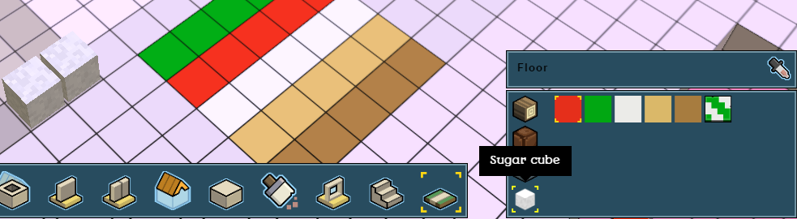
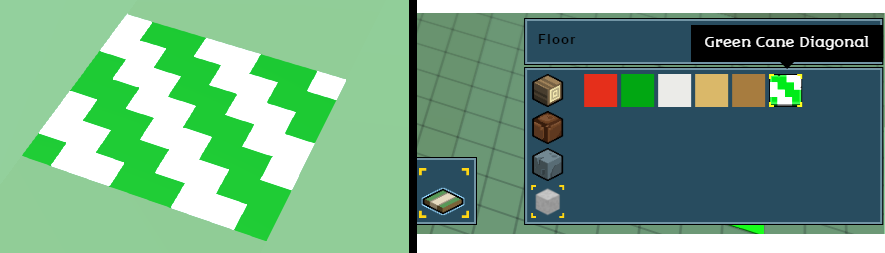
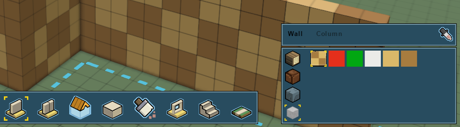
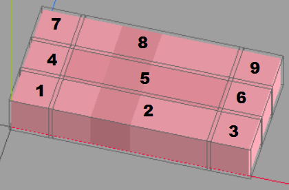
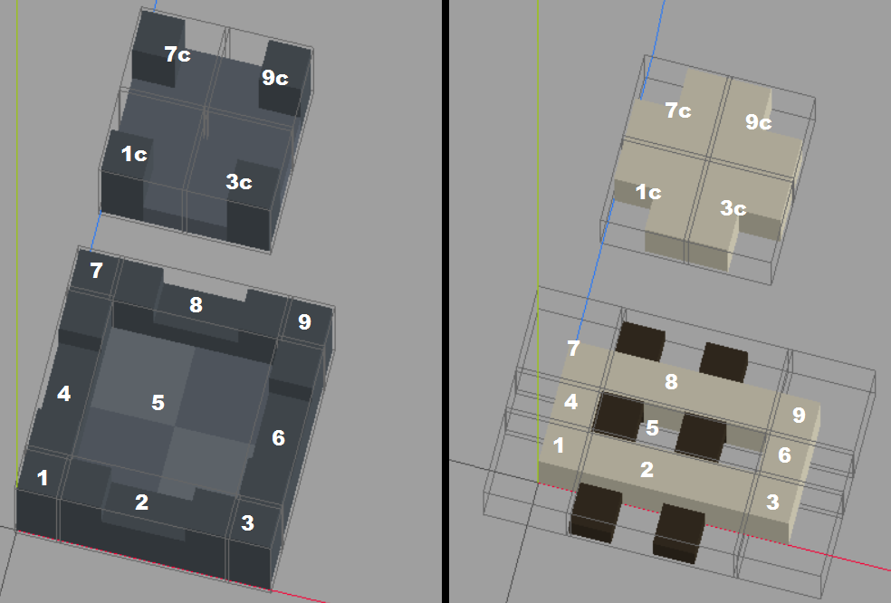
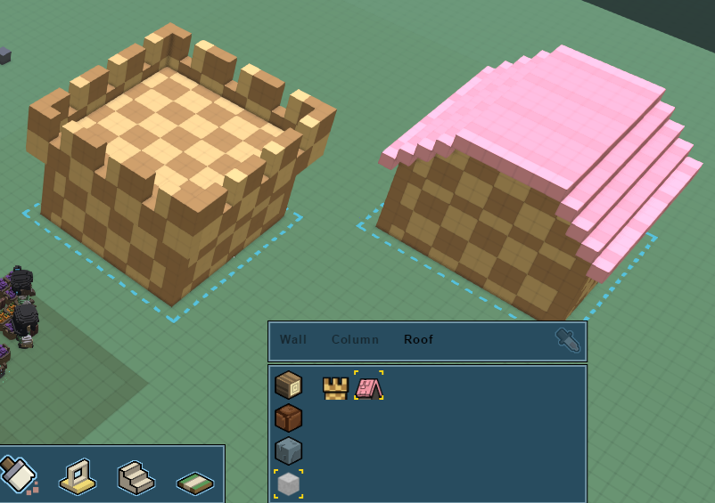

- Adding custom building resources
- Adding building colors
- Adding floor patterns
- Adding wall patterns
- Adding roof patterns
- Adding windows
- Adding doors
- Decorations and furniture
Adding custom building resources
We can add custom building resources to the building editor, so that our hearthlings can build with them.
First we'll need to create a generic resource to add it to
stonehearth/data/resource_constants.json. We explain the fields related to the building editor here. Our example looks like this:{ "resources": { "sugar resource": { "name": "i18n(candyland:ui.data.constants.sugar_resource_name)", "icon": "/candyland/entities/construction/sugar/sugar.png", "stacks": 60, "default_resource": "candyland:resources:sugar:sugar_cube", "auto_queue_crafter_job": "stonehearth:jobs:mason", "builder_icon": "/candyland/entities/resources/sugar/builder_sugar.png", "builder_icon_hover": "/candyland/entities/resources/candy/builder_sugar_hover.png", "builder_sound_uri": "stonehearth:sounds:building_wall_stone", "tooltip": "candyland:ui.game.build_mode2.tooltips.sugar_resource" } } }We need to associate building colors with our building resource. These colors can't be already defined for other building resources. Our
building_brushes.jsonfile looks like this:{ "always_available": { "sugar resource": { "colors": { "#E52F1B": { "display_name": "i18n(candyland:data.build.building_brushes.colors.#E52F1B)", "ordinal": 1 }, "#01A712": { "display_name": "i18n(candyland:data.build.building_brushes.colors.#01A712)", "ordinal": 2 }, "#EBEBE8": { "display_name": "i18n(candyland:data.build.building_brushes.colors.#EBEBE8)", "ordinal": 3 }, "#DAB869": { "display_name": "i18n(candyland:data.build.building_brushes.colors.#DAB869)", "ordinal": 4 }, "#A77C3F": { "display_name": "i18n(candyland:data.build.building_brushes.colors.#A77C3F)", "ordinal": 5 } } } } }All these colors will be available for rooms/walls, columns, floor, roads and stairs for our sugar resource.
Now we add our generic resource and building colors to the corresponding indexes from the stonehearth mod via a mixinto in our manifest:
"mixintos": { "stonehearth:data:resource_constants" : "file(data/resource_constants.json)", "stonehearth:build:brushes" : "file(data/build/building_brushes.json)" }We need to make items with "sugar" and "resource" in their material tags be obtainable in the game, by mining, harvesting, crafting, etc.
We can test that our new building resource appears in the game and that hearthlings can use it to build: 
Adding building colors
How to add custom colors to existing building resources was already explained in the customization guide. You can also see an example for a custom resource above.
Adding floor patterns
Floor, wall and roof patterns are added via mixintos to stonehearth/data/build/building_brushes.json. Patterns for floor will also be available for roads automatically.
"mixintos" : {
"stonehearth:build:building_brushes" : "file(data/build/building_brushes.json)"
}
For example, our mixinto looks like this:
{
"pattern": {
"sugar resource": {
"patterns": {
"candyland:build:brushes:pattern:green_cane_diagonal": {
"icon": "/candyland/ui/game/modes/build_mode/building_designer_2/images/brushes/green_cane_diagonal.png",
"display_name": "i18n(candyland:data.build.building_brushes.patterns.green_cane_diagonal)"
}
}
}
}
}
Floor patterns are listed inside the "pattern" entry, grouped by building resource. Inside the "patterns" key we have a list of URIs of our patterns (the URIs link to the QB model), and we define an "icon" for the UI and a "display_name" for the tooltip.
Like for the colors, patterns can't be repeated for different resources, so make sure there are no duplicate URIs of patterns for the same building resource or among different resources.
Import a QB model of an existing pattern to see how they are setup. You can find them inside stonehearth/data/build/brushes/pattern. Floor patterns don't need to be perfectly square, you can make rectangular shapes, or even shapes with holes. They do have to be 1 voxel high though since floors and roads are only that tall.
 It's also recommended to add the colors that you've used in your pattern to the list of available colors for the corresponding resource (if they aren't there already). Otherwise, they will be treated as wood by default in the building cost list.
It's also recommended to add the colors that you've used in your pattern to the list of available colors for the corresponding resource (if they aren't there already). Otherwise, they will be treated as wood by default in the building cost list.
Don't forget to add the URI of the pattern to your manifest!
"aliases" : {
"build:brushes:pattern:green_cane_diagonal" : "file(data/build/brushes/pattern/green_cane_diagonal/green_cane_diagonal.qb)"
}

Adding wall patterns
Same than for adding floor patterns, but the mixinto will include them inside the "wall" entry:
{
"wall": {
"sugar resource": {
"patterns": {
"candyland:build:brushes:wall:cookie_wall": {
"icon": "/candyland/ui/game/modes/build_mode/building_designer_2/images/brushes/cookie_wall.png",
"display_name": "i18n(candyland:data.build.building_brushes.patterns.cookie_wall)"
}
}
}
}
}
Don't forget to add the alias for your .qb model:
"aliases" : {
"build:brushes:wall:cookie_wall" : "file(data/build/brushes/wall/cookie_wall/cookie_wall.qb)"
}
Much like floor patterns, you can make different shapes for the patterns but the wall should be only 1 voxel thick, otherwise you will get unexpected results when using the room / wall tools in the builder.
The .qb model for walls is usually centered over (0,0,0) but you can make it in the positive quadrant too. If you import an existing wall pattern (they're inside stonehearth/data/build/brushes/wall), you'll see that you can make them shorter or taller, they don't need to have the default wall height from the game (6 blocks), the builder will know how to stretch the pattern. They can also have different lengths.
Make sure that the colors of your pattern are also in the list of available colors for the corresponding resource (be careful not to add duplicates). 
Adding roof patterns
Roof patterns are added to the building_brushes.json file like the floor/wall patterns:
{
"roof": {
"sugar resource": {
"patterns": {
"candyland:build:brushes:roof:cookie_castle_roof": {
"icon": "/candyland/ui/game/modes/build_mode/building_designer_2/images/brushes/cookie_castle_roof.png",
"display_name": "i18n(candyland:data.build.building_brushes.patterns.cookie_castle_roof)",
"type": "flat"
},
"candyland:build:brushes:roof:cotton_candy_roof": {
"icon": "/candyland/ui/game/modes/build_mode/building_designer_2/images/brushes/cotton_candy_roof.png",
"display_name": "i18n(candyland:data.build.building_brushes.patterns.cotton_candy_roof)",
"type": "peaked"
}
}
}
}
}
Notice that we have an extra field here for the type of roof. If it's "peaked", the roof model will be treated like the peaked roofs from the stonehearth mod: we can make them taller or shorter, and decide which sides are slanted and which ones should drop a wall to fill the gap.
If it's "flat", the roof model will be treated like the rayyas_children roofs (or the castle roof): they will remain flat and we can only change the direction that they're facing.
Roofs can only be added as patterns, since their .qb model has to be setup in a special way, to represent its different parts, such as inner/outer corners, sides, and the middle. But players are free to use the blocks tool in the building editor to create more detailed roofs or roofs with different slants (roofs from the northern_alliance mod were made using the blocks tool, for example).
Let's take a look at the QB models for the roofs (you can find more examples inside stonehearth/data/build/brushes/roof). The ones for peaked roofs are setup in a 9-grid:

Each part is in a different matrix/layer. The names for these matrices/layers are numbers, and must be the same than in the picture above. Due to how the parts are placed and rotated in the game, the pattern will look different depending on the slants, size, etc. so this is the usual size used for peaked roofs models in the game.
The ones for the flat roofs are in a 13-grid (to account for inner corners too): 
Notice that the names for the matrices/layers for the inner corners end by c, and are based on the other corners. We need to use these exact names in our layers.
For flat roofs we can make them a bit taller if we want to (for example, for the crenellations of the castle roof), and increase the size of the middle section if we want it to have a pattern. Also notice how the clay slat roof is set up. The border of the roof is aligned with the X/Z axes, while the wooden parts protude outwards.
Make sure to add the colors you've used to the list of building colors for the corresponding resource (if they aren't there already). And don't forget to add the aliases for your .qb models to the manifest:
"aliases" : {
"build:brushes:roof:cotton_candy_roof" : "file(data/build/brushes/roof/cotton_candy/cotton_candy_roof.qb)",
"build:brushes:roof:cookie_castle_roof" : "file(data/build/brushes/roof/cookie_castle/cookie_castle_roof.qb)"
}
Finally, test your roof patterns in the game: 
Adding windows
Windows and doors have a 'cutter' which automatically creates a hole for them when you place them in a wall when designing a building.
We can find the windows in stonehearth/entities/construction. They're created like any other entity, and we can make them available through recipes, loot, etc. Copying an existing one will ensure that we're using existing categories and material tags, as well as any mixin that we might need (like "stonehearth:mixins:placed_object", for example).
The .qb model for windows is centered over 0,0,0 (and aligned to the floor) in Qubicle.
These are the components that are different from the usual. From wooden_window_frame_ghost.json:
"mob": {
"align_to_grid": [
"x"
]
}
This is the mob component. The "align_to_grid" array can contain "x", "z" or both. In this case we want to ensure that the center of the qb model of the window is aligned to the nearest round value on the X axis, so that it's correctly aligned within walls. The alignment might not be obvious at first (since the position will vary depending on the model/region origins and the original position in Qubicle) but if this is not properly set up, the window will be displaced when we try to place it in a building design.
"stonehearth:fixture": {
"cursor": "stonehearth:cursors:create_window",
"margin": {
"left": 0,
"right": 0,
"top": 1,
"bottom": 1
},
"bounds": {
"min": { "x": -1, "y": 0 },
"max": { "x": 1, "y": 2 }
}
}
This is the fixture component. The "cursor" field is no longer used. We have a different cursor for each of the fixture categories in the building editor now. The "margin" section is also not used anymore, it can be omitted. Nowadays we allow to place windows adjacent to each other in the walls.
The "bounds" region, however, is mandatory. Windows and doors need this region (notice that it is defined with only X and Y points, since windows and doors are meant to cut 1 block wide walls). It's the area (including holes) that we can touch in the builder to drag the window/door around.
For the rest of placeable entities that we can use in the builder, we need to make sure they have at least 1 collision region defined (no matter their collision type), otherwise the builder won't know how to use them properly for its calculations.
"stonehearth:portal": {
"cutter": [
{
"min": { "x": -1, "y": 0 },
"max": { "x": 1, "y": 2 }
}
]
}
This is the portal component. Here we specify the cutter region for the window, also defined with only X and Y points. When we're designing a building, this region will be automatically cut from walls when we place the window on them. The region is based on whole units. We can't cut fractions of building blocks. Usually it's the same size than the bounds from the fixture component, but it can be a different size.
Windows normally have a "mob_collision_type" of "clutter", so that hearthlings can stand very close to them, but bigger windows may also define a collision region.
The bigger ones also have a "movement_modifier_shape". This is used so that if you place them near the ground or at the ground, hearthlings avoid walking through them. Since hearthlings prefer shorter paths, sometimes they walked through tall windows instead of using the doors. This helps with that problem. Example:
"movement_modifier_shape": {
"modifier": -0.5,
"nav_preference_modifier": -0.5,
"region": [
{
"min": { "x": -1, "y": 0, "z": -1 },
"max": { "x": 1, "y": 3, "z": 2 }
}
]
}
The "modifier" controls the speed at which an entity will move when within the region. The "nav_preference_modifier" affects how entities will perceive speed in that shape when conducting pathfinding. The "region" is where the modifiers will be applied, and it normally corresponds to the cutter of the window (notice that it has 3 dimensions).
These properties are also used for roads, for example, so that hearthlings walk faster on them.
Adding doors
Doors are similar to windows, they are located under stonehearth/entities/construction as well. Most doors have the same mixins (from stonehearth/mixins/doors) to reuse the same animation table and other common properties.
In their ghost JSON file, they have an extra property in the fixture component, called "valign", but this property is also no longer in use, like the cursor and margins. Nowadays we can place a door wherever we want in a wall.
The portal component has the same functionality than for windows, as explained above. We also use "align_to_grid" : [ "x" ] so that they can fit inside walls.
Normally, in the components of their ghost file (via a mixin or directly in the JSON) we indicate an animation table and a default effect, for instance:
"render_info": {
"animation_table": "file(/data/rigs/entities/construction/double_door/double_door.json)"
},
"effect_list": {
"default": "file(/data/rigs/entities/construction/double_door/effects/closed.json)",
"initial_pose_animation": "closed.json"
}
The "animation_table" points to the rig (the skeleton) of the door. The "default" effect in the effect list will be the default animation that the door will play after we place it down, and "initial_pose_animation" is the name of an animation effect to pose the door when it is in ghost form.
Normally doors are not centered over (0,0,0) in Qubicle. They are aligned to the ground on the positive quadrant. Their matrices have names so that they can reuse existing rigs for animations. Make sure to check examples from the stonehearth mod.
In the entity's JSON file (not the ghost), we can also find these other components:
Inside the "stonehearth:entity_forms" component we can see the "placeable_on_walls" and "placeable_on_ground" flags. These make placement possible. For items that should only be placeable on walls we use the first one, and for items that should only be placeable on ground we use the second one.
For doors, we use both since we can also put doors for tunnel entrances.
As with windows, the "region_collision_type" is "none".
It has the "sensor_list" component, which contains a list of sensors. These are entries with a custom identifier that define a radius in world units (ignore the "type" field, it's not used).
The "stonehearth:door" component only has one field, pointing to the identifier of the sensor we declared in the sensor list. Then, in the door component code we retrieve the sensor and trace it. When an entity gets inside/outside of the sensor radius, the sensor triggers some code that we can customize. In the case of doors it will play the open/close animation (and stay open if a hearthling stands close to the door).
In the entity_data we have "stonehearth:entity_radius". This is defined in world units too. It's used to determine the distance (range) needed for combat and the like (it's static read-only data so we can consult it anywhere in our code if we need to).
Decorations and furniture
These are created like any other placeable item. In order for them to appear in the building editor tabs, they need to belong to one of these categories in their catalog data: decoration, construction, door, furniture, workshops, storage, window; and either you have them already in your inventory, or the crafter that can craft them has already unlocked those recipes.
Make sure that the items that are hangable have all their properties correctly set up. The rugs / floor tiles have "stonehearth:floor_deco" : {} in the entity_data of the ghost file, which is used to allow players to place the banners of the combat commands on top of them.
Decorations, furniture, etc. don't need the fixture component, instead they define their own collision regions. For those that can be used in the building editor, make sure that they have at least one region defined even if their collision type is "clutter"/"tiny"/"none", so that we can drag them around in the blueprints and the builder knows how to use them in its calculations.